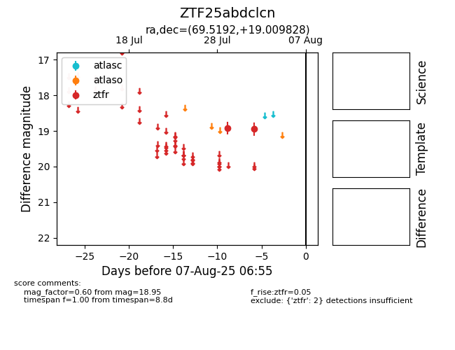

Target ZTF25abdclcn at 2025-08-07 07:30, see:
FINK: fink-portal.org/ZTF25abdclcn
Lasair: lasair-ztf.lsst.ac.uk/objects/ZTF25abdclcn
ALeRCE: alerce.online/object/ZTF25abdclcn
alt names
ZTF25abdclcn (ztf,fink)
coordinates:
equatorial (ra, dec) = (69.5192,+19.00983)
galactic (l, b) = (179.2283,-18.29699)
photometry
last ztfr=18.95
2 ztfr detections
